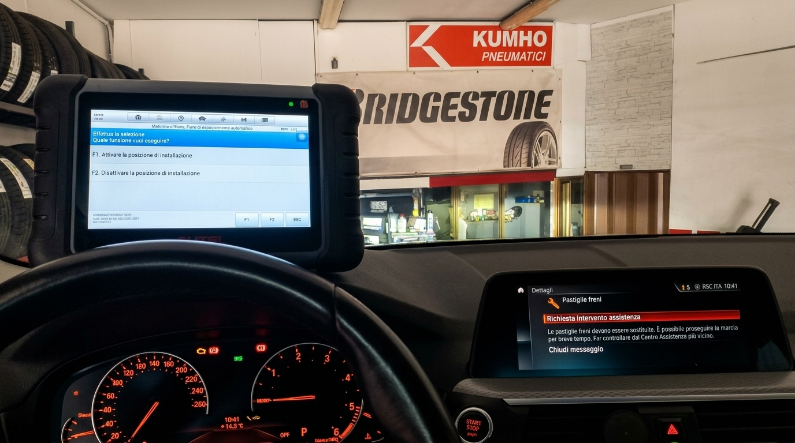
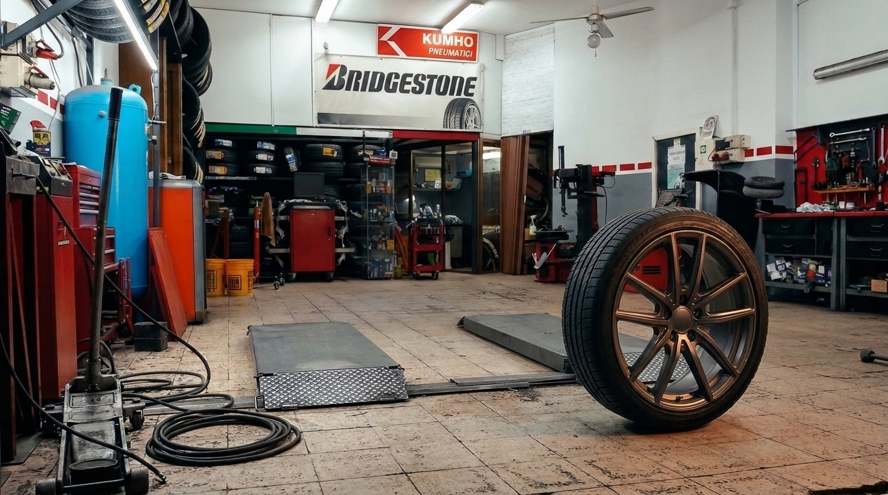
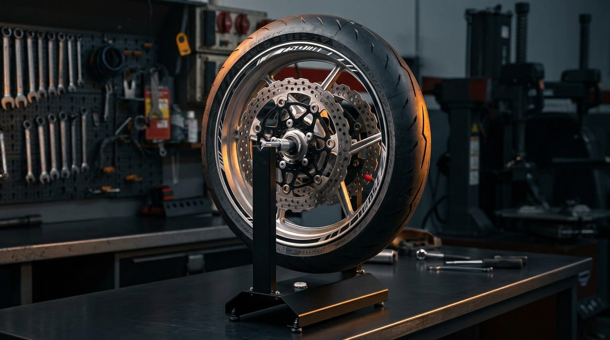
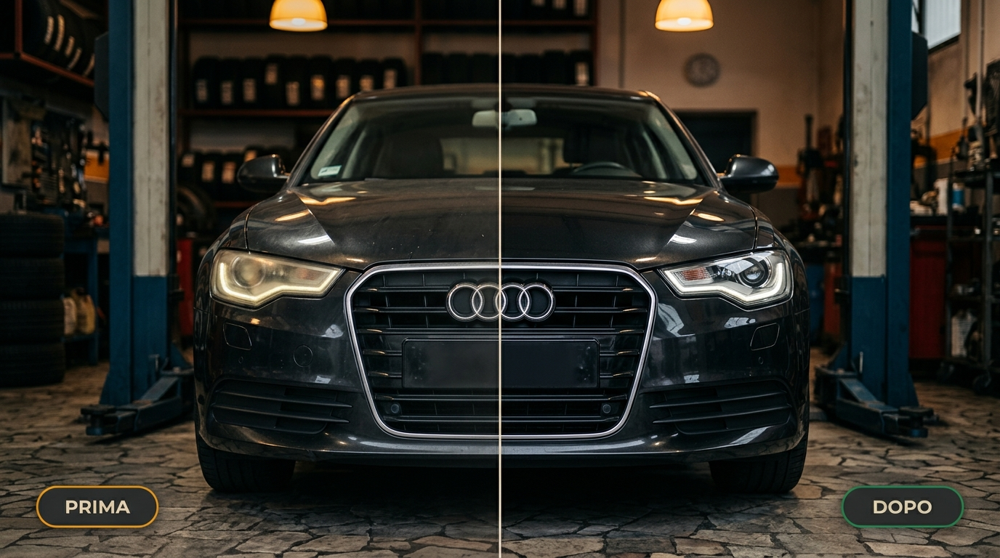

Pneumatici Nuovi
Fornitura e montaggio gomme estive, invernali e 4 stagioni per auto, SUV, moto e scooter (tra cui Bridgestone, Kumho e altri marchi selezionati).
Da Sergio Pappalardo Gomme trovi esperienza, attrezzatura professionale e prezzi onesti per cambio gomme, riparazione forature su auto e moto, equilibratura, assistenza TPMS e cura dell'auto in Via Ercole Patti, 45.
Interventi precisi su pneumatici e gruppo ruota per automobilisti e motociclisti di Pedara, Nicolosi, Trecastagni, Mascalucia, Viagrande e comuni limitrofi.
Fornitura e montaggio gomme estive, invernali e 4 stagioni per auto, SUV, moto e scooter (tra cui Bridgestone, Kumho e altri marchi selezionati).
Bilanciamento di precisione per ruote auto e moto per eliminare vibrazioni allo sterzo e garantire un'usura uniforme del battistrada.
Regolazione computerizzata dell'assetto ruote per stabilità in curva, sterzo dritto e massima durata degli pneumatici.
Verifica, sostituzione, clonazione e programmazione valvole TPMS con supporto di controllo elettronico su parametri e sensori di bordo.
Sostituzione olio motore e filtri con lubrificanti specifici per mantenere il motore protetto, pulito ed efficiente.
Trattamento professionale contro ingiallimento e opacità delle ottiche per ripristinare brillantezza ed efficienza luminosa su strada.
Intervento rapido e sicuro su pneumatici auto, moto e scooter con controllo della tenuta e della struttura interna della gomma.
Accessori essenziali per il veicolo, valvole, bulloneria, kit di sicurezza e assistenza rapida sul gruppo ruota.
205/55 R16).
Verifica Disponibilità →
Una realtà radicata a Pedara dove il cliente parla direttamente con chi mette le mani sul veicolo: competenza, cortesia e attenzione al dettaglio.

Assistenza per controllo elettronico delle centraline, supporto impianto freni, gestione sensori TPMS e cambio olio direttamente in officina.

Massima attenzione per preservare i cerchi durante smontaggio e rimontaggio, con consiglio onesto su quando riparare o sostituire.

Supporto concreto su auto, moto e scooter con equilibratura di precisione e assistenza per forature improvvise per farti ripartire in sicurezza e tempi rapidi.

Trattamento mirato contro ingiallimento e opacità per restituire trasparenza alle ottiche e maggiore visibilità e sicurezza nella guida notturna.
Estratti dalle recensioni pubbliche su Google Maps, dove la disponibilità e l'onestà nei prezzi sono gli aspetti più apprezzati.
“Mentre eravamo in viaggio da Siracusa abbiamo avuto un problema con una ruota e ci ha prestato soccorso con rapidità e cortesia, permettendoci di ripartire in sicurezza. Persona competente, gentile e prezzo onesto.”
“Piccola ma attrezzatissima officina. Il proprietario si presta a risolvere anche piccoli problemi non necessariamente legati agli pneumatici: dopo una foratura sentivo un rumore a una ruota e dopo accurata indagine il problema è stato risolto.”
“Professionalità e grande cortesia a un prezzo più che onesto: ho bucato la gomma posteriore della moto la vigilia di Ferragosto. Sergio si è reso subito disponibile e in pochi minuti l'ha riparata permettendomi di rimettermi in strada.”
Ci trovi a Pedara in Via Ercole Patti, 45. L'indicatore qui sotto mostra in tempo reale se l'officina è aperta adesso.
Mappa protetta per la tua privacy: nessun dato viene inviato a Google finché non scegli di aprire o caricare la mappa interattiva.